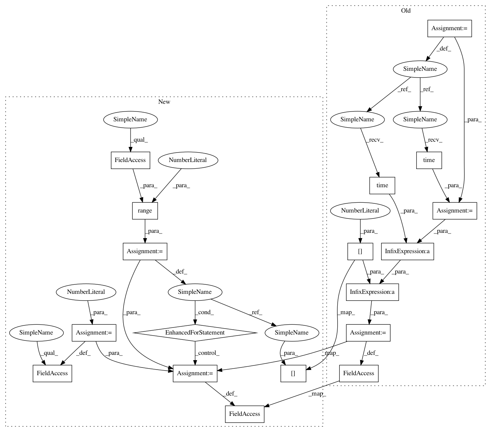

364412b2ecd78281c9dcd5f6bb529f2704dec701,scripts/keras_benchmarks/models/lstm_benchmark.py,LstmBenchmark,run_benchmark,#LstmBenchmark#Any#,32
Before Change
x = x[start: end]
y = y[start: end]
start_time = time.time()
time_callback = timehistory.TimeHistory()
model.fit(x, y,
batch_size=self.batch_size,
epochs=self.epochs,
callbacks=[time_callback])
self.total_time = time.time() - start_time - time_callback.times[0]
After Change
epochs=self.epochs,
callbacks=[time_callback])
self.total_time = 0
for i in range(1, self.epochs):
self.total_time += time_callback.times[i]
In pattern: SUPERPATTERN
Frequency: 3
Non-data size: 18
Instances
Project Name: tensorflow/benchmarks
Commit Name: 364412b2ecd78281c9dcd5f6bb529f2704dec701
Time: 2017-11-16
Author: anjalisridhar@google.com
File Name: scripts/keras_benchmarks/models/lstm_benchmark.py
Class Name: LstmBenchmark
Method Name: run_benchmark
Project Name: tensorflow/benchmarks
Commit Name: 364412b2ecd78281c9dcd5f6bb529f2704dec701
Time: 2017-11-16
Author: anjalisridhar@google.com
File Name: scripts/keras_benchmarks/models/cifar10_cnn_benchmark.py
Class Name: Cifar10CnnBenchmark
Method Name: run_benchmark
Project Name: tensorflow/benchmarks
Commit Name: 364412b2ecd78281c9dcd5f6bb529f2704dec701
Time: 2017-11-16
Author: anjalisridhar@google.com
File Name: scripts/keras_benchmarks/models/mnist_mlp_benchmark.py
Class Name: MnistMlpBenchmark
Method Name: run_benchmark